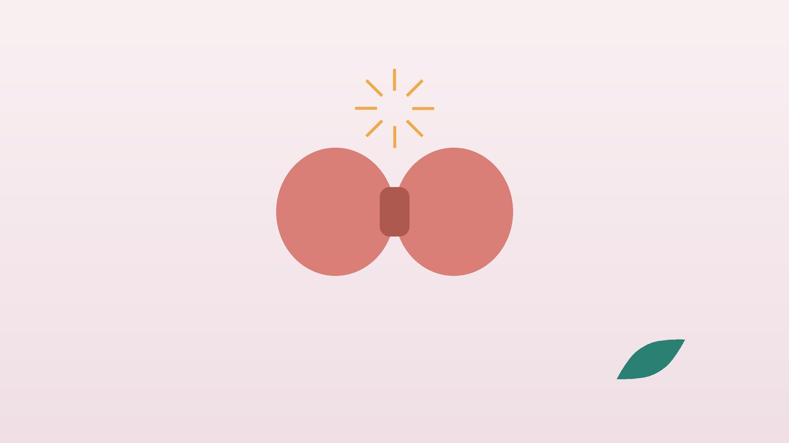

건강 칼럼 · 기력·만성질환 · 인천 갑상선기능항진증 한의원
가슴이 두근거리고 살이 빠진다면, 갑상선기능항진증 한방 관리

혹시 갑상선 호르몬이 넘치고 있을까요?
- 가만히 앉아 있어도 심장이 빨리 뛰는 게 느껴진다
- 잘 먹는데도 몇 달 사이 체중이 눈에 띄게 줄었다
- 남들보다 더위를 타고 땀이 많아졌다
- 손을 앞으로 뻗으면 손가락이 잘게 떨린다
- 신경이 날카로워지고 잠들기 어렵다
- 눈이 튀어나와 보이거나 목 앞이 불룩해졌다는 말을 들었다
이 체크리스트는 진단 도구가 아닙니다. 여러 항목이 해당되면 내분비내과에서 갑상선 호르몬(TSH, 유리 T4) 검사를 먼저 받아 보세요.
지금 바로 응급실에 가야 하는 신호
- 고열과 함께 맥박이 분당 140회 안팎으로 빨라진다
- 헛소리를 하거나 안절부절못하다가 의식이 흐려진다
- 심한 구토·설사가 이어지고 눈과 피부가 노래진다
- 가슴이 불규칙하게 뛰며 숨이 차고 어지럽다 (심방세동 의심)
- 자고 일어났거나 많이 먹은 뒤 갑자기 팔다리에 힘이 빠져 일어서지 못한다 (주기성 마비 의심)
앞의 세 가지는 호르몬이 폭발적으로 늘어나는 갑상선 폭풍(갑상선 중독 위기)일 수 있으며, 감염·수술·출산이나 약을 갑자기 끊은 뒤에 생기기도 합니다. 즉시 119를 부르세요.
또 항갑상선제를 먹는 중에 열이 나고 목이 아프면 드물게 백혈구가 크게 줄어드는 부작용일 수 있습니다. 그날 처방 병원이나 응급실에서 혈액검사를 받으세요.
갑상선기능항진증은 왜 생기나요?
- 그레이브스병: 몸의 면역이 갑상선을 자극하는 항체를 만들어 호르몬이 계속 나옵니다. 20~40대 여성에게 많고, 눈이 붓거나 튀어나오는 안병증이 함께 오기도 합니다.
- 독성 결절: 갑상선에 생긴 혹이 스스로 호르몬을 만들어 냅니다.
- 갑상선염: 염증으로 저장된 호르몬이 새어 나와 잠시 항진 증상을 보이다가 오히려 기능이 떨어지기도 합니다. 출산 뒤에 생기기도 합니다.
미국갑상선학회(ATA) 2016년 지침은 그레이브스병의 치료로 항갑상선제, 방사성요오드, 수술 세 가지를 제시하며, 환자 상황에 맞춰 내분비내과에서 선택합니다. 항갑상선제는 대개 1년 이상 먹으며, 끊은 뒤 재발하기도 해 추적 검사가 중요합니다.
한의학은 갑상선 항진을 어떻게 보나요?
한의학에서는 목 앞이 불룩하게 붓는 병을 영(癭) 또는 영병(癭病)이라 불렀습니다. 수나라 소원방의 『제병원후론』은 영이 근심과 성냄으로 기가 맺혀 생긴다고 적어, 감정의 긴장을 중요한 원인으로 보았습니다.
두근거림, 열감, 땀, 체중 감소처럼 몸이 과열된 모습은 기가 막혀 생긴 열이 진액을 태우는 음허화왕(陰虛火旺)으로 해석합니다. 한방 치료는 호르몬 약을 대신하지 않고, 과열된 몸을 식히고 소모된 기운을 채우는 쪽을 돕습니다.
나의 갑상선 항진은 어떤 유형일까?
약물 치료를 유지하면서 진찰로 나누는 한의학적 구분입니다.
1. 간울화화(肝鬱化火) 예민하고 뜨거운 유형
- 이런 분에게 많아요
- 스트레스를 받은 뒤 발병한 30~40대
- 나타나는 모습
- 화가 치밀고 얼굴이 달아오른다
- 함께 오는 몸의 신호
- 입이 쓰고 마름, 옆구리 답답함, 눈 충혈
- 진찰에서 보이는 모습
- 혀 가장자리가 붉고 맥이 빠르고 당김
- 치료 방향
- 막힌 기운을 풀고 열을 내리는 방향 (단치소요산 계열)
- 오늘부터 해 볼 것
- 하루 10분 산책 시간을 정해 두세요.
2. 음허화왕(陰虛火旺) 마르고 열이 오르는 유형
- 이런 분에게 많아요
- 체중이 빠르게 줄고 잠을 설치는 분
- 나타나는 모습
- 손발바닥이 화끈거리고 밤에 땀이 난다
- 함께 오는 몸의 신호
- 두근거림, 불면, 눈이 뻑뻑함, 손떨림
- 진찰에서 보이는 모습
- 혀가 붉고 태가 적으며 맥이 가늘고 빠름
- 치료 방향
- 진액을 채워 과열을 가라앉히는 방향 (천왕보심단 계열)
- 오늘부터 해 볼 것
- 늦은 밤 휴대폰을 멀리하고 같은 시각에 잠자리에 드세요.
3. 기음양허(氣陰兩虛) 지치고 힘이 빠지는 유형
- 이런 분에게 많아요
- 치료가 길어졌거나 재발을 겪은 분
- 나타나는 모습
- 수치는 나아졌는데 몸이 축 처지고 숨이 찬다
- 함께 오는 몸의 신호
- 허벅지 힘 빠짐, 식욕 저하, 잦은 피로
- 진찰에서 보이는 모습
- 혀가 옅고 맥이 힘없음
- 치료 방향
- 소모된 기와 음을 함께 채우는 방향 (생맥산 계열)
- 오늘부터 해 볼 것
- 단백질 반찬을 끼니마다 챙기세요.
한의원에서는 어떻게 진찰하나요?
- 검사 수치와 약: 최근 TSH, 유리 T4, 항체 결과를 봅니다. 항갑상선제 이름과 용량을 알려 주시면 확인해 처방합니다.
- 맥박과 혈압: 진료 때마다 맥박이 빠르거나 불규칙하지 않은지 봅니다.
- 자율신경 검사: 긴장 정도를 수치로 살펴봅니다.
- 목과 눈: 갑상선 크기와 눈의 부기를 살핍니다.
침·약침·한약 치료는 어떻게 하나요?
1. 침 치료
목 앞 갑상선 자리는 직접 자극하지 않고, 손발과 등의 혈자리로 두근거림과 긴장을 다스립니다.
- 신문(神門): 손바닥 쪽 손목 주름에서 새끼손가락 쪽 끝, 힘줄 안쪽의 오목한 곳입니다.
- 태충(太衝): 발등에서 엄지와 둘째 발가락 뼈가 만나는 곳 앞의 오목한 자리입니다.
- 태계(太谿): 안쪽 복사뼈와 아킬레스 힘줄 사이 오목한 곳입니다.
2. 약침
갑상선 자체가 아니라, 긴장으로 굳은 목·어깨와 피로에 보조적으로 약침을 시행합니다.
3. 한약
탕약 위주로 유형에 맞게 짓습니다. 해조(海藻)·곤포(昆布)처럼 요오드가 많은 해조류 약재는 옛날 영병 처방에 자주 들어갔지만 항진증에서는 빼고, 마황처럼 맥박을 빠르게 할 수 있는 약재도 쓰지 않습니다. 항갑상선제와 심장 박동을 늦추는 약은 그대로 드시고, 담당 의사와 상의 없이 끊지 마세요. 임신 중이거나 간 질환이나 심장 질환 병력이 있다면 진료 때 꼭 알려 주세요. 확인 후 안전한 약재로 처방합니다. 불안과 예민함이 두드러지면 증상이 가벼운 경우 한약 치료를 중심으로 관리하기도 하며, 깊다면 정신건강의학과 치료를 함께 받으세요. 한약은 원장이 원내 탕전실에서 약재 선별부터 달이는 과정까지 직접 관리하며, 10일분씩 처방해 복용 경과를 보고 약재 구성과 양을 조절합니다.

관리는 어떤 순서로 진행되나요?
- 내분비내과 진단 원인을 확인하고 약물 치료를 시작합니다.
- 첫 한방 진료 수치와 복용 약, 맥박을 확인하고 유형을 나눕니다.
- 증상 관리 침과 한약으로 두근거림, 불면, 피로를 함께 다스립니다.
- 함께 추적 병원 검사 결과가 나올 때마다 가져오시면 처방을 다시 맞춥니다.
한약 기간은 증상과 수치 변화에 따라 다르며, 오래된 경우 2~3개월 이상 단계별로 봅니다.
갑상선 항진기에 챙길 생활 관리
- 요오드 과량 피하기: 다시마·미역 같은 해조류는 요오드가 많습니다. 다시마환, 해조류 즙, 요오드 보충제처럼 농축해 많이 먹는 것을 피하세요. 방사성요오드 치료 전에는 병원의 저요오드 식사 안내를 따릅니다.
- 카페인 줄이기: 커피와 에너지 음료는 두근거림을 키웁니다.
- 단백질과 칼슘: 근육과 뼈가 빠지기 쉬우니 끼니마다 단백질과 칼슘 반찬을 챙기세요.
- 금연: 흡연은 그레이브스 안병증을 악화시키므로 꼭 끊으세요.
- 신문 누르기: 가슴이 두근거릴 때 손목의 신문혈을 반대쪽 엄지로 30초씩 지그시 누르며 숨을 길게 내쉬어 보세요.
다른 진료가 함께 필요한 경우
- 눈이 튀어나오거나 사물이 둘로 보이고 눈이 아프면 안과 진료를 함께 받으세요.
- 맥이 불규칙하게 뛰면 순환기내과에서 심전도로 심방세동을 확인하세요.
- 임신을 계획하고 있다면 항갑상선제 종류를 조정할 수 있어 내분비내과에 미리 알리세요.
자주 묻는 질문 Q&A
- Q1. 갑상선기능항진증은 한약으로만 치료할 수 있나요?
- 아닙니다. 호르몬 수치를 낮추는 것은 항갑상선제 등 병원 치료가 기본이며, 한약은 함께 쓰는 관리입니다.
- Q2. 수치가 정상이 되었는데 약을 끊어도 되나요?
- 정상이 된 뒤에도 한동안 유지해야 재발이 줄어, 끊는 시기는 내분비내과에서 정합니다.
- Q3. 항갑상선제와 한약을 같이 먹어도 되나요?
- 약 이름을 알려 주시면 확인해 처방하며, 복용 시간은 1~2시간 띄우세요.
- Q4. 미역국도 먹으면 안 되나요?
- 가끔 한 그릇 드시는 정도는 대개 괜찮지만, 매일 많이 드시거나 농축 제품을 드시는 것은 피하세요.
- Q5. 살이 빠졌는데 잘 먹어도 되나요?
- 항진기에는 소모가 많아 골고루 충분히 드세요. 수치가 잡히면 체중이 다시 늘 수 있어 그때 양을 조절합니다.
- Q6. 운동은 해도 되나요?
- 맥박이 빠른 시기에는 가볍게 걷고, 수치가 안정된 뒤 강도를 올리세요.
- Q7. 눈이 튀어나온 것도 한약으로 좋아지나요?
- 안병증은 안과 치료가 필요하며, 한방 치료는 눈의 피로를 덜어 주는 보조 관리입니다.
- Q8. 갑상선 항진증도 유전되나요?
- 가족 중 갑상선 질환이 있으면 생길 가능성이 높아져, 증상이 있으면 검사를 받아 보세요.
문원열 대표원장한의사 · 365스마일한의원
임상 경력 15년, 인천 서구 가정동에서 개원 후 10년째 진료하고 있으며, FCST 턱관절학회·연부조직학회·침도학회 등에서 활동합니다. 아픈 곳만이 아니라 증상의 원인을 찾아 진료합니다.
진료 안내
- 진료시간
- 평일 09:00~20:00 (점심시간 13:00~14:00, 접수 마감 19:30)
토·일·공휴일 09:00~15:00 (접수 마감 14:30) - 주소
- 인천광역시 서구 가경주로 46, 2층 (가정동)
인천2호선 가정중앙시장역 인근
영상으로 길 안내 보기 → - 주차
- 한의원 건물 바로 앞 1층 도원주차장, 또는 도보 5분 거리 가정주차장
- 예약
- 예약 바로가기 또는 전화 예약
진료시간은 사정에 따라 바뀔 수 있으니 방문 전 전화로 확인해 주세요.
함께 읽으면 좋은 칼럼
건강 칼럼 전체 보기 →


참고 자료
- Ross DS, et al. 2016 American Thyroid Association Guidelines for Diagnosis and Management of Hyperthyroidism and Other Causes of Thyrotoxicosis. Thyroid, 2016
- 소원방, 『제병원후론(諸病源候論)』 영후(癭候)
- 질병관리청 국가건강정보포털 — 원문
※ 이 글은 일반적인 건강 정보이며, 개인의 상태에 따라 치료 방법과 결과는 다를 수 있습니다. 정확한 진단과 치료는 진료를 통해 결정됩니다. 침·약침 시술 후 드물게 멍, 통증 등이 생길 수 있습니다.